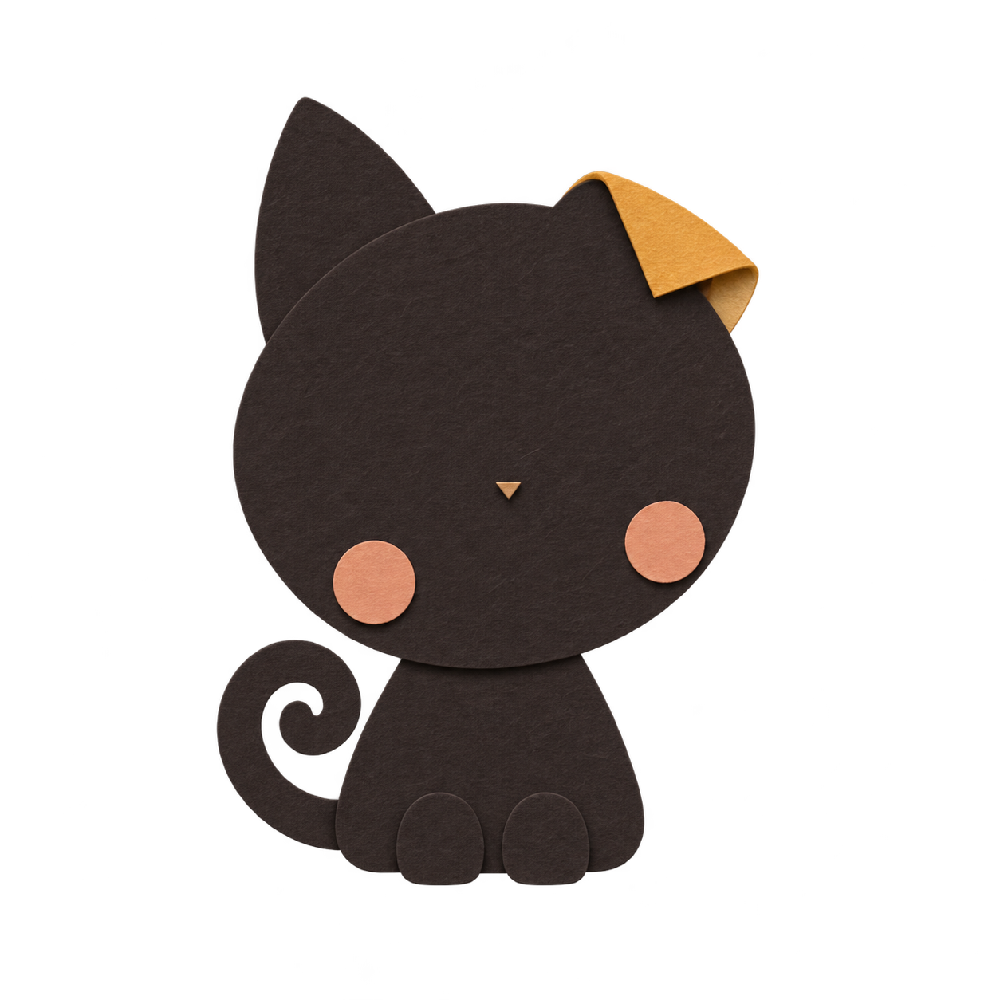
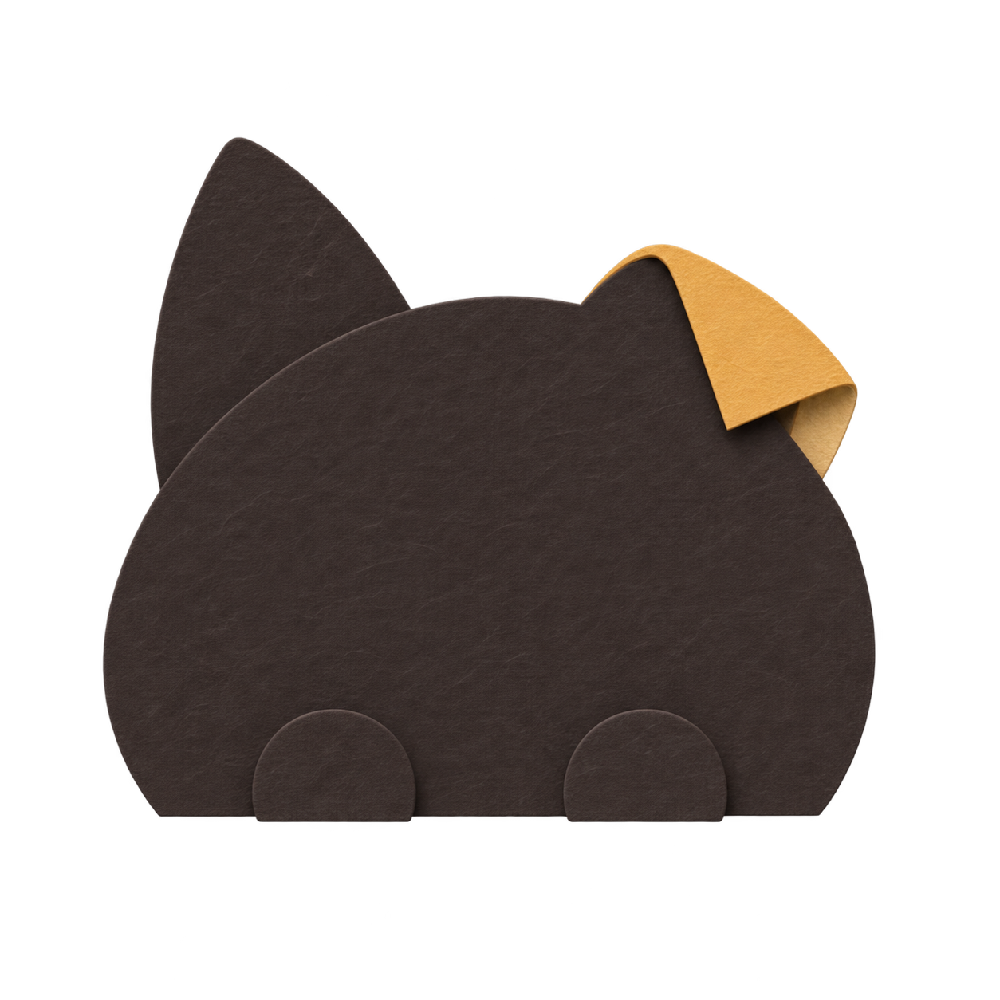
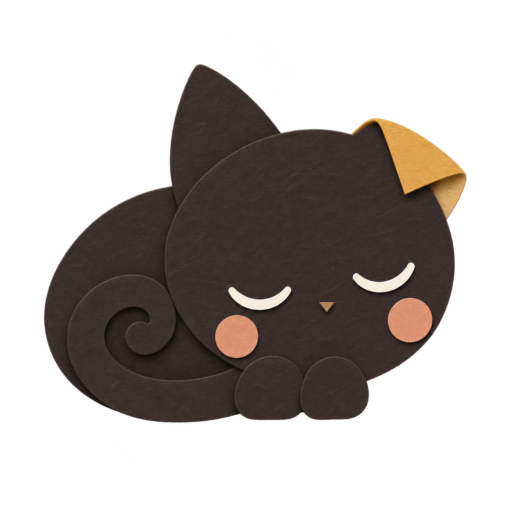
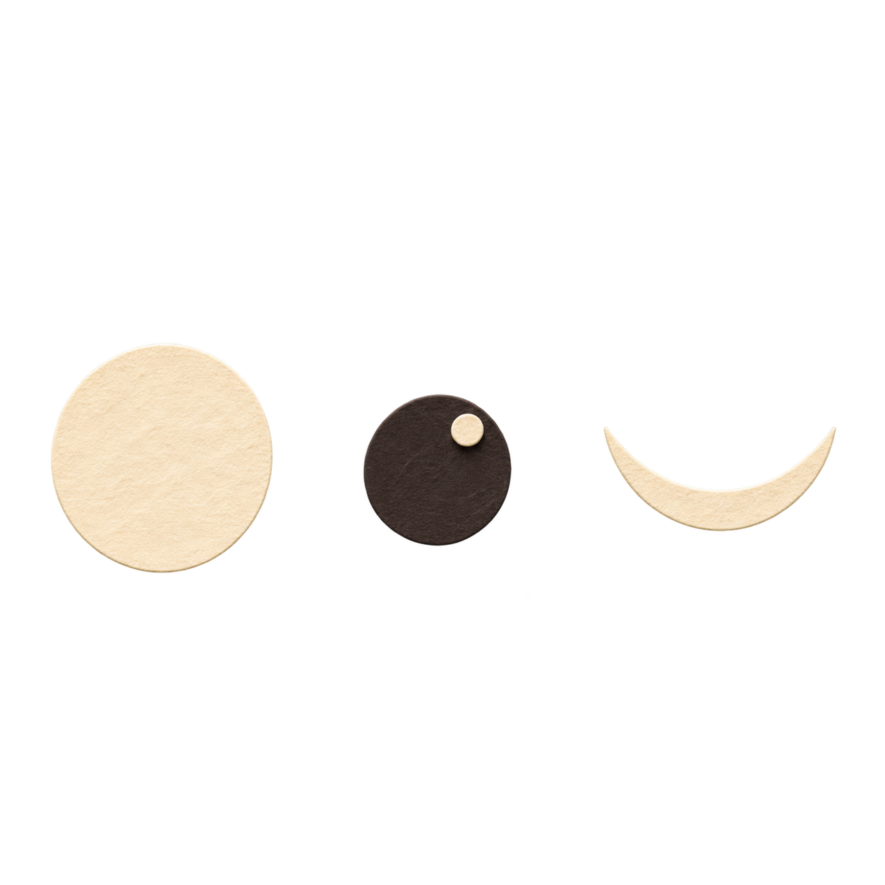

Sitting · eyeless
Intentionally eyeless; animated eye pieces are separate.

nat-sitting-eyeless.png ↗Peeking · eyeless
Intentionally eyeless; animated eye pieces are separate.

nat-peeking-eyeless.png ↗Sleeping
Sleeping pose with closed eyes.

nat-sleeping.png ↗Eye pieces
Three pieces on one sheet: eye white, pupil, and closed eyelid. Extract pieces or define reviewed texture rectangles before use.

nat-eye-pieces.png ↗